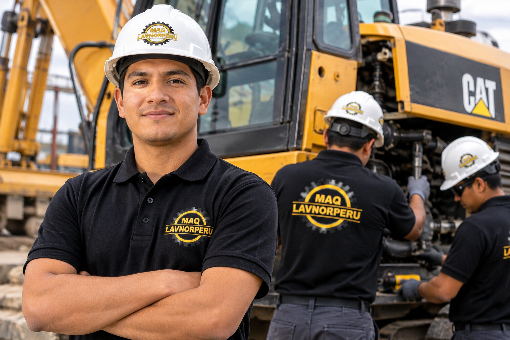

LO QUE NOS MUEVE
Nuestra misión
Facilitar el acceso a maquinaria para el desarrollo de los proyectos de nuestros clientes, con una atención cercana, información clara y una coordinación responsable de cada alquiler.
MAQ LAVNOR / NUESTRA EMPRESA
Maquinaria para tu operación. Compromiso con cada proyecto.
01 / QUIÉNES SOMOS
En MAQ Lavnor nos dedicamos al alquiler de maquinaria. Nuestro catálogo reúne equipos de movimiento de tierras, compactación, iluminación, aire comprimido y herramientas para el trabajo en campo.
Queremos que cada cliente encuentre información clara para elegir el equipo que necesita y pueda coordinar las condiciones de su alquiler de acuerdo con su operación.

LO QUE NOS MUEVE
Facilitar el acceso a maquinaria para el desarrollo de los proyectos de nuestros clientes, con una atención cercana, información clara y una coordinación responsable de cada alquiler.
HACIA DÓNDE VAMOS
Ser una empresa de alquiler de maquinaria elegida por la confianza que construye, la claridad de su servicio y las relaciones de largo plazo con sus clientes.
MAQUINARIA / TRASLADO / PROYECTO
Cuéntanos dónde se realizará el trabajo. Revisemos el equipo, las fechas y las condiciones de traslado para preparar tu consulta.
Consultar para mi ubicaciónAtención y traslado sujetos a evaluación de la ubicación y disponibilidad.
02 / POR QUÉ ELEGIR MAQ LAVNOR
Estos son los principios que guían
la experiencia que buscamos ofrecerte.
Consulta imágenes y especificaciones de cada modelo antes de elegir.
Tu ubicación, plazo y condiciones de trabajo son el punto de partida de la consulta.
Define el traslado y las condiciones de recepción al preparar tu alquiler.
Confirma disponibilidad, configuración, accesorios y tarifa para tus fechas.
03 / NUESTRA FORMA DE TRABAJAR
La confianza se cuida en cada conversación, cada acuerdo y cada entrega.
04 / ENTREGAS Y TRABAJO EN CAMPO
Una mirada a las entregas y traslados
de equipos de MAQ Lavnor.

Traslado de torres de iluminación en plataforma.

Herramientas neumáticas preparadas para su traslado.
CONVERSEMOS SOBRE TU OPERACIÓN